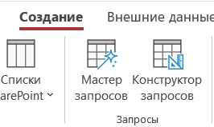
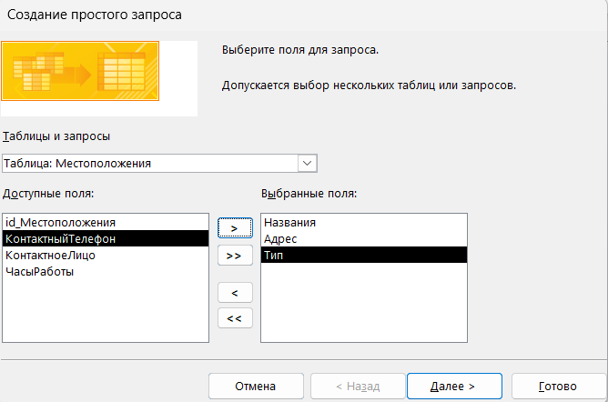
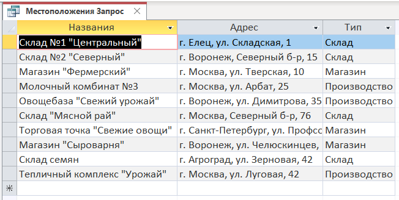
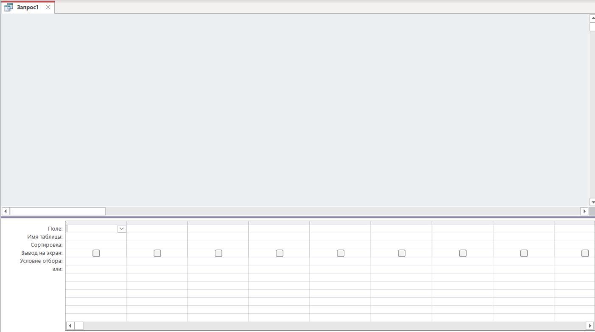
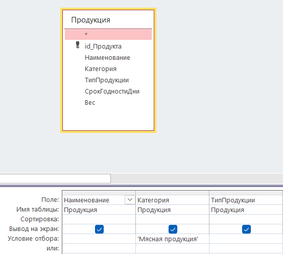
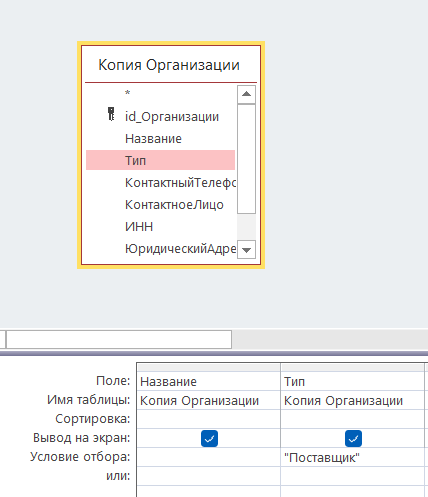
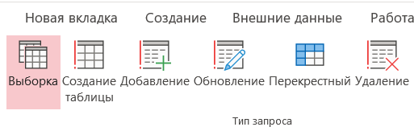
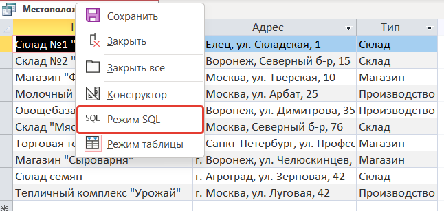
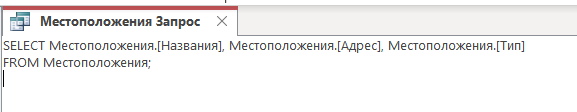

Построение SQL-запросов
Теоретическая часть
Цель работы: Освоение методов извлечения и обработки данных с помощью различных типов запросов в MS Access.
Основные понятия:
Запрос – инструмент для выборки, фильтрации, анализа и преобразования данных из одной или нескольких таблиц базы данных. Запросы позволяют работать с данными без изменения самих таблиц, обеспечивая гибкий способ анализа информации. В Access запросы могут быть созданы в режиме конструктора (без знания SQL) или в режиме SQL.
Виды запросов:
Запрос на выборку (SELECT) – позволяет извлечь данные из одной или нескольких таблиц, указав условия отбора, в основном используется для отображения нужных записей по определённым критериям (например, вывести определенные столбцы или таблицы)
Пример кода: SELECT Имя, Фамилия FROM Сотрудники WHERE Должность = "Менеджер";
Перекрестный запрос – формирует сводную таблицу с группировкой данных по строкам и столбцам. В MS Access создается через Мастер перекрестных запросов
Запрос на обновление – используется для изменения данных в таблицах.
Пример кода: UPDATE Сотрудники SET Зарплата = Зарплата * 1.1 WHERE Отдел = "Продажи";
Запрос на добавление – добавляет новые записи в существующую таблицу
Пример кода:
INSERT INTO АрхивЗаказов (Номер, Дата, Клиент)
SELECT Номер, Дата, Клиент
FROM Заказы
WHERE Дата < #01.01.2023#;
Запрос на удаление – удаляет записи из таблицы по заданному условию
Пример кода:
DELETE FROM Заказы
WHERE Дата < #01.01.2022#;
Специальные возможности:
Параметрические запросы – позволяют пользователю вводить значение при выполнении запроса
Пример кода:
SELECT * FROM Сотрудники
WHERE Должность = [Введите должность для поиска];
Вычисления в запросах – позволяют пользователю вводить значение при выполнении запроса
Пример кода:
SELECT * FROM Сотрудники
WHERE Должность = [Введите должность для поиска];
Минимальный синтаксис SQL запроса:
SELECT [Поле1], [Поле2], ...
FROM [ИмяТаблицы]
[WHERE условие]
[ORDER BY Поле ASC|DESC];
Практическая часть
Откройте MS Access и откройте проект
Для создания запроса в MS Access необходимо на вкладке «Создание» выбрать окно «Мастер запросов»

В открывшемся окне мы должны выбрать пункт «Простой запрос» и в диалоговом окне выбрать необходимую таблицу и соответствующие поля, которые будут участвовать в нашем запросе.
Нажимаем на кнопку «Далее»

Для того, чтобы увидеть наш запрос мы выбираем действие «Открыть запрос для просмотра данных»
По итогу в табличной форме у нас вывелись столбцы «Название», «Адрес» и «Тип»

SQL код запроса выглядит следующим образом:
Листинг 43 – Запрос на выборку
| SELECT Местоположения. [Названия], Местоположения. [Адрес], Местоположения. [Тип] FROM Местоположения; |
|---|
Данный запрос выбирает из таблицы Местоположения (FROM Местоположения) столбцы Названия, Адрес и Тип.
Запросы также можно создавать через Конструктор запросов, для этого на вкладке «Создание» выбираем пункт «Конструктор запросов».
Перед нами откроется окно запроса, где мы можем добавлять и удалять таблицы и столбы для нашего запроса. В нижней части интерфейса мы можем видеть настройку таблиц и столбцов

Чтобы добить таблицу для запроса мы можем нажать правой кнопкой мыши в любую область конструктора и
В выпадающем списке выбрать пункт «Добавить таблицу» или же в меню ниже в поле «Имя таблицы» выбрать название таблицы.
Выбираем таблицу «Продукция» и также 3 столбца: Наименование, Категория и ТипПродукции.
В столбце Категория в поле «Условие отбора или:» пишем в одинарных кавычках ‘Мясная продукция’.

Нажимаем на кнопку «Выполнить» и у нас выводятся соответствующие столбцы с фильтрацией отбора по категории «Мясная продукция»
Далее мы разберем запрос, который будет удалять те или иные записи в конкретной таблице. Данный запрос называется запрос «На удаление».
Создаем копию таблицы «Организации», выбираем меню «Конструктор запросов» и добавляем в него копию таблицы «Организации».
Выборки будем использовать столбцы «Название» и «Тип», в условии отбора к столбцу «Тип» пишем Поставщик.

Далее мы нажимаем на кнопку «Выполнить». Данный запрос выведем нам название организации и тип организации.
Возвращаемся обратно в конструктор и теперь нам нужно сделать так, чтобы 4 записи с поставщиками удалились, для этого на панели вверху «Тип запроса» мы выбираем пункт «Удаление».
Сохраняем запрос и нажимаем на кнопку «Выполнить»

Для удобства составления запросов на добавление, удаление, для сортировки удобнее всего использовать режим SQL для построения запросов. Откроем наш запрос с местоположение в режиме SQL

Открыв запрос в таком режиме, мы можем с помощью кода составлять запрос, и он будет автоматически составляться в конструкторе запросов, что прощает работу с запросами.
Рис. 32. Пример SQL запроса
Теперь давайте изменим этот запрос, добавить условие по типу, чтобы выводились только склады и также чтобы имелась сортировка столбца названия по возрастанию. Для это применим служебные слова WHERE и ORDER BY.
ASC и DESC в SQL указывают порядок сортировки значений в указанном столбце — по возрастанию или по убыванию:
Сохраняем и закрываем проект
